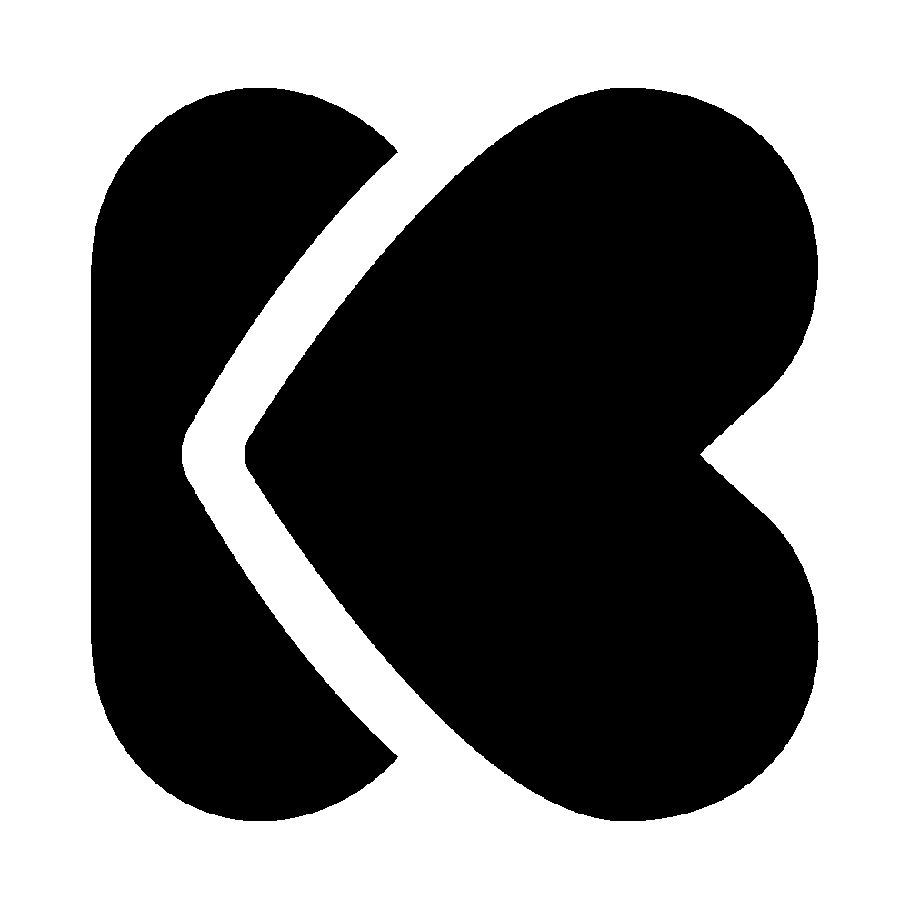
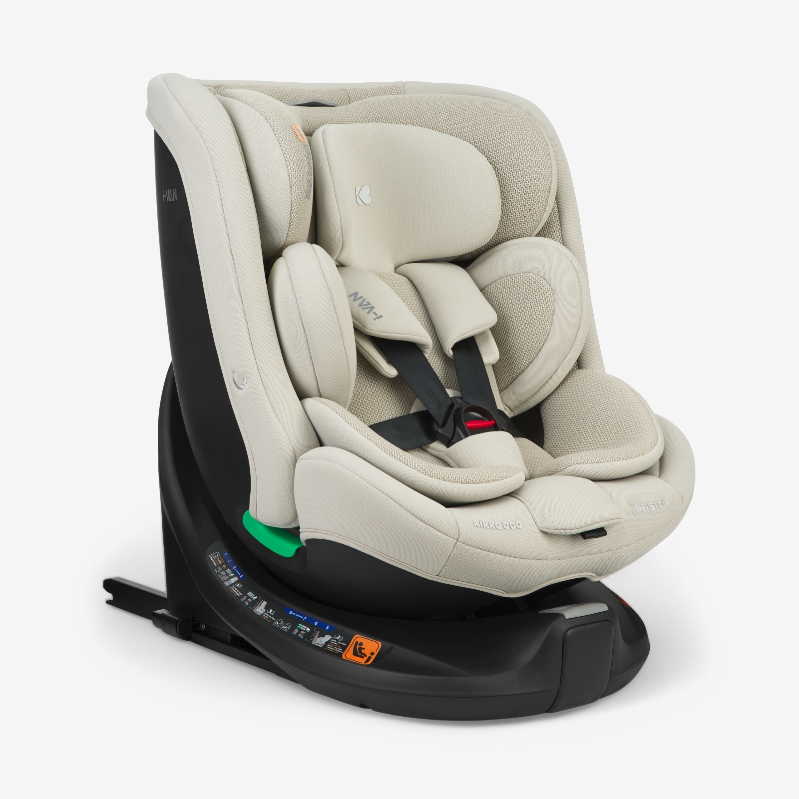
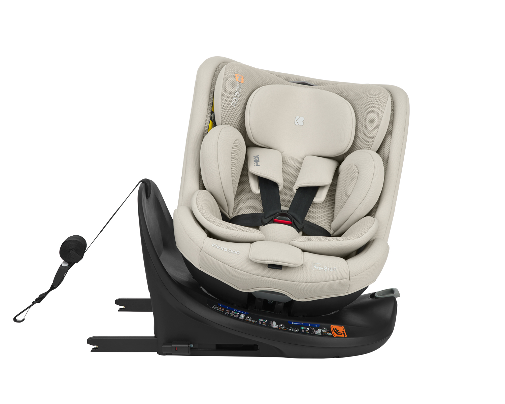

KIKKABOO

שלום! אני איי-ואן
I-VAN
התקנה נכונה בארבעה שלבים

CLICK
Step
01
חברו את ה-ISOFIX
לעוגן הרכב עד לקליק
Step
02
דחפו לחוזקה
דחפו את הכיסא בחוזקה אל תוך מושב הרכב
Step
03
Top Tether
חברו את הרצועה העליונה לעוגן שברכב ומתחו
Step
04
שלושה ירוקים
ודאו שכל שלושת האינדיקטורים — ISOFIX ימין, ISOFIX שמאל ו-Top Tether — דולקים בירוק
KIKKABOO
נסיעה בטוחה
I-VAN · Safe Seat